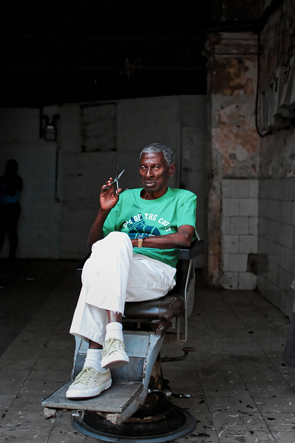
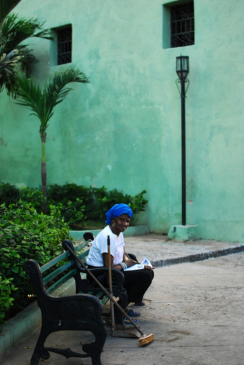
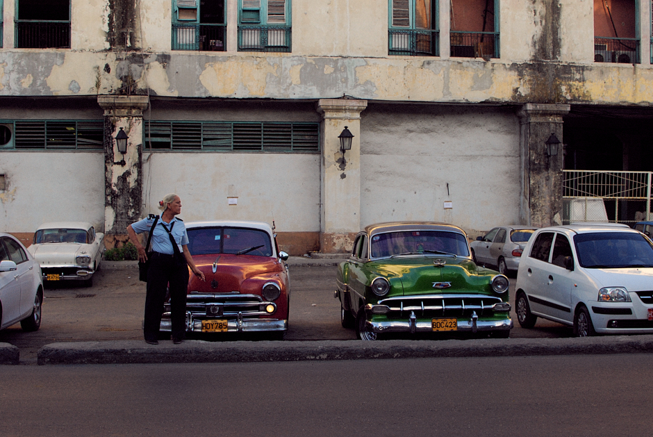

<main>
  <!-- Set the general css settings for the whole page. -->
  <link rel="stylesheet" href="Design/parent.css" />

  <head>
    <!-- Primary Meta Tags -->
    <title>Ege Ilicak | Faces of Cuba</title>
    <meta name="title" content="Ege Ilicak | Photographer" />
    <meta name="description" content="Faces of Cuba" />

    <!-- Open Graph / Facebook -->
    <meta property="og:type" content="website" />
    <meta property="og:url" content="https://egeilicak.com/" />
    <meta property="og:title" content="Ege Ilicak | Photographer" />
    <meta property="og:description" content="Faces of Cuba" />
    <meta
      property="og:image"
      content="https://egeilicak.com/Resources/Photos/Cuba/13.jpg"
    />

    <!-- Twitter -->
    <meta property="twitter:card" content="summary_large_image" />
    <meta property="twitter:url" content="https://egeilicak.com/" />
    <meta property="twitter:title" content="Ege Ilicak | Photographer" />
    <meta
      property="twitter:description"
      content="Faces of Cuba"
/>
    <meta
      property="twitter:image"
      content="https://egeilicak.com/Resources/Photos/Cuba/13.jpg"
    />

    <!-- Google Site Verification -->
    <meta
      name="google-site-verification"
      content="45D1GVF2rjrbKqV84eEkvT6AadyhlfalHpBzB1VXkVA"
    />
  </head>

<meta name="viewport" content="width=device-width, initial-scale=1" />
<body onkeydown="SlideByKey()" onresize="CheckPageWidth()" class="w3-margin-right w3-margin-left" style="margin: auto;">


  <div id="Header" class="w3-padding-24 w3-mobile" style="margin: auto; width:95%">

    <span id="LeftMenu" class="Menu w3-xlarge" ><a href="index.html" >EGE ILICAK</a></span>
    <span id="RightMenu" class="Menu w3-right w3-xlarge" style="cursor: pointer"></span>
    <span id="MobileMenu" class="MobileMenu"><div id="MobileMenuContent" class="MobileMenuContent w3-xlarge"></div></span>
    
  </div>

<div class="w3-mobile" style="width: 95%; margin: auto;">
  <p>Faces of Cuba | Streets of Havana & Trinidad.</p>
  </div>

<div class="w3-container w3-mobile w3-center w3-padding-32" style="width: 95%; margin: auto;">
  
  
  
  
  
  
  
  
  
  
  
  
  
  
</div>

<div class="w3-container w3-mobile w3-center w3-padding-32" style="width: 95%; margin: auto;">
  <hr><h6 class="w3-left">&copy Ege Ilicak. All Rights Reserved.</h6>
</div>

  <script src="Controller/navigator.js"></script>
    <!-- Important: Set the total image count accordingly! -->

  </body>
</main>
